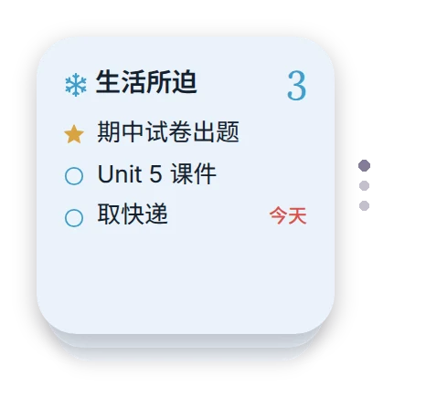

一页一个小组件，叠成一摞放在桌面上，
往上一滑就翻页；点一下，就去备忘本里看全文。

每日语录用的就是它，不用再装。（换新手机的话：App Store 搜 Scriptable，免费。）
点下面的「复制代码」→ 打开 Scriptable → 右上角 ＋ → 粘贴 → 点左上角的标题，改名叫「冬的备忘本」→ Done。
正在取回脚本……
长按桌面上的提醒事项小组件 → 移除小组件。再长按空白处 → 左上角 编辑 → 添加小组件 → 搜 Scriptable → 选小号（左右滑到最小的那个）→ 添加，拖到刚空出来的位置。
长按刚放好的小组件 → 编辑小组件：Script 选「冬的备忘本」，Parameter 填「生活所迫」。其余不用管。
照第 3、4 步再加一个小号，Parameter 填「喜欢的事」，然后按住它拖到第一个上面，松手——两个就叠在一起了。再照样加一个「日更素材」。以后在那个位置往上一滑就是下一页。
想让它老老实实停在你翻到的那页：长按这一摞 → 编辑叠放 → 把「智能轮换」和「小组件建议」都关掉。